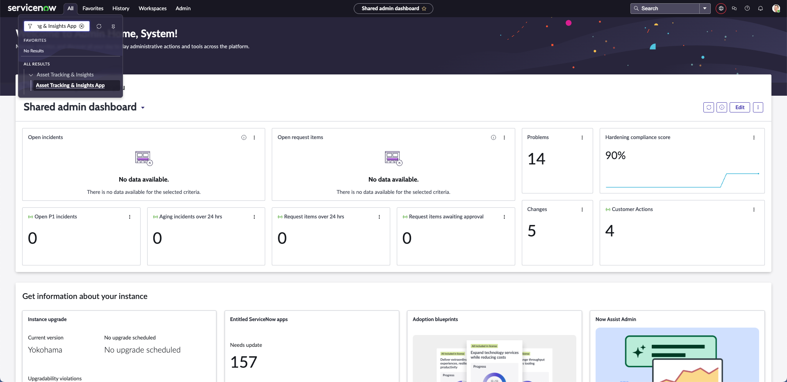
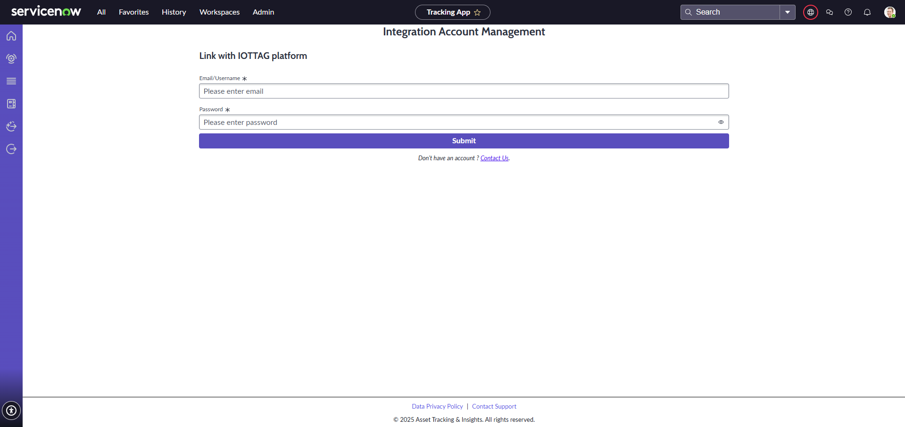
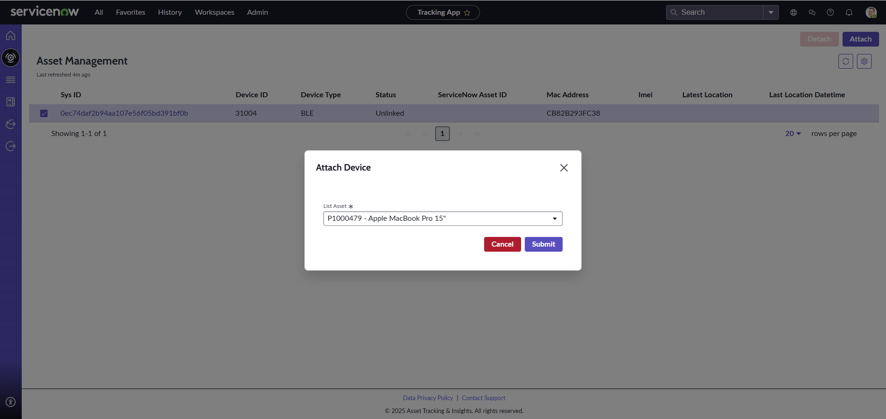
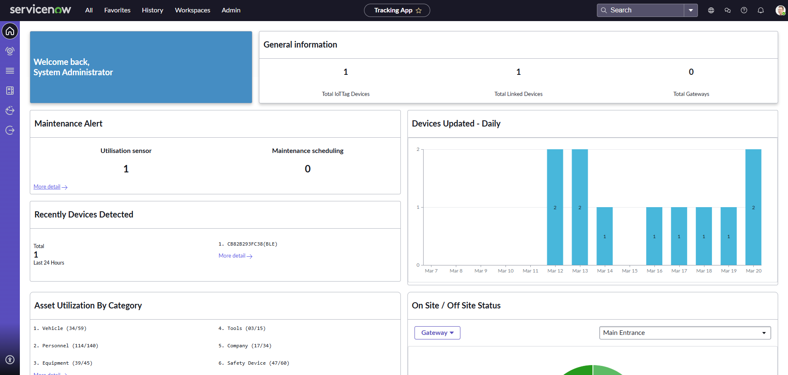
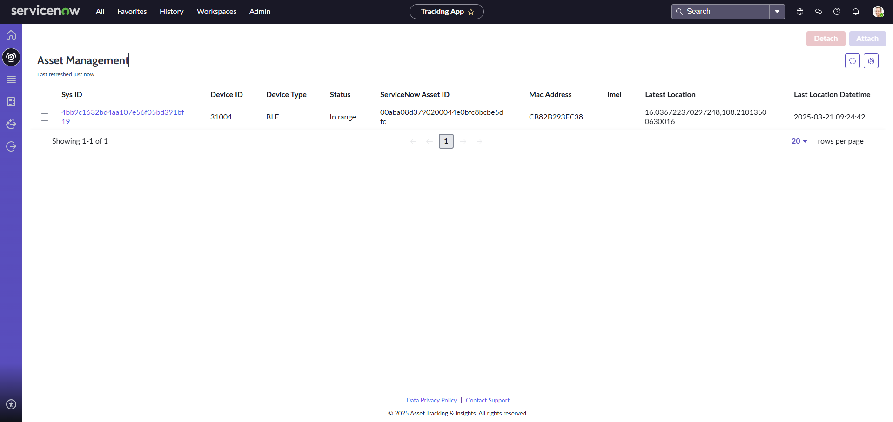
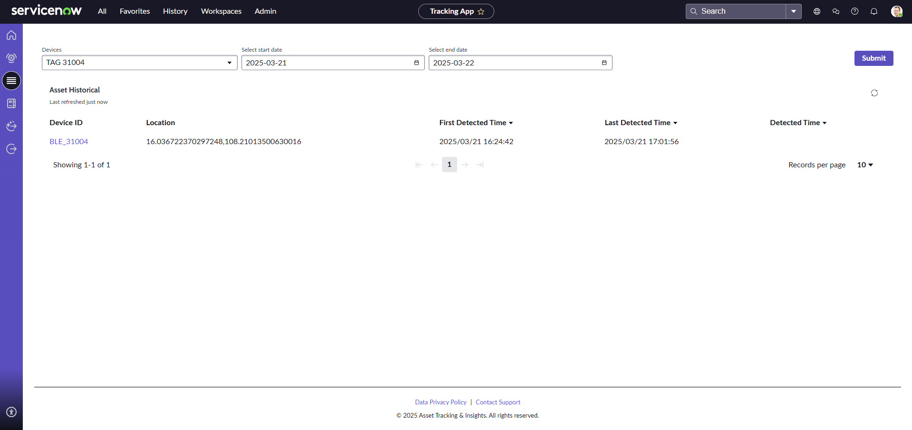
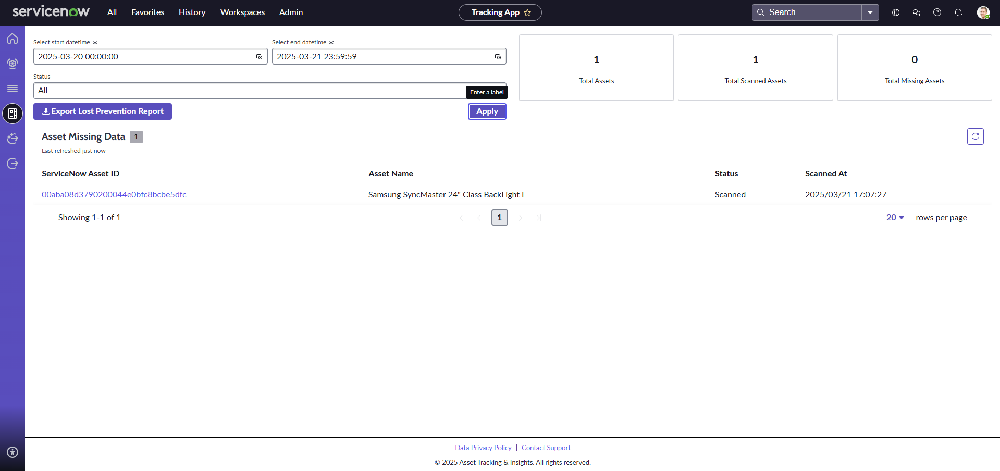
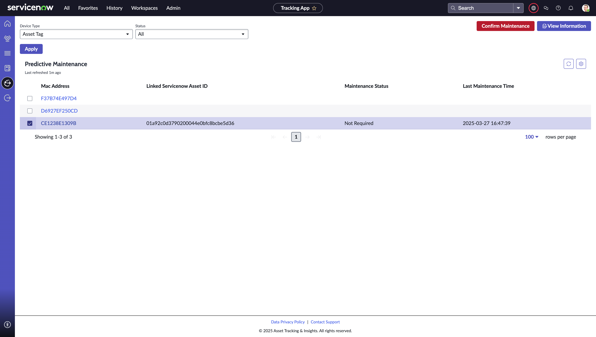
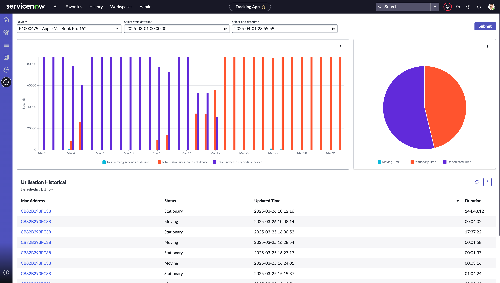

Atlas Platform · Integrations
ServiceNow Integration
Real-Time Asset Monitoring & Operational Insights
The Asset Tracking & Insights app empowers ServiceNow users to track assets directly within the Atlas platform, with full visibility into the location and status of every asset at any moment. Economical autonomous tracking tags can be seamlessly linked to ServiceNow assets for convenient, data-driven management — reducing risk and avoiding unexpected losses.
Key Features
Intelligent Asset Management Inside ServiceNow
Real-Time Tracking
Monitor asset locations with up-to-the-minute data on whereabouts and safety.
How it helps
- Quickly identify any unauthorised movement.
- Ensure teams know asset locations at all times.
- Respond swiftly to emergencies with accurate location data.
Regular Auditing & Exclusions Reporting
Automatically audit all assets to determine what you have and what is missing at the end of each day.
How it helps
- Maintain accurate asset records.
- Identify missing or misplaced assets quickly.
- Reduce manual inventory checks.
Utilisation Monitoring
Track utilisation, idle time, runtime and fuel consumption with detailed efficiency reports.
How it helps
- Identify underused or overused assets.
- Minimise fuel consumption and idle time.
- Schedule maintenance based on actual runtime data.
Predictive Maintenance
Receive proactive maintenance alerts based on usage patterns and performance metrics.
How it helps
- Address potential issues before they lead to failure.
- Reduce unplanned repairs and disruptions.
- Extend asset lifespan with usage-based maintenance.
Asset Auditing
A comprehensive audit-trail solution for accountability, including asset historical tracking.
How it helps
- Maintain a detailed log of asset movements.
- Ensure accurate reporting for regulatory purposes.
Asset Usage Optimisation
Analyse usage patterns, identify underutilised or overused assets and support data-driven allocation.
How it helps
- Reduce unnecessary purchases by maximising existing resources.
- Reallocate assets where they are most needed.
- Minimise asset idle time.
Alert Management
Real-time notifications via email, SMS or in-app alerts, with customisable settings by asset type, location and activity — including alerts when an asset stays out longer than configured.
How it helps
- Improve response time to asset-related incidents.
- Prevent loss by detecting unusual absence patterns.
- Ensure assets are returned in a timely manner.
Gateways & Geofences Management
Configure and manage gateways and geofences, defining restricted or designated areas for asset movement.
How it helps
- Simplify setting up and managing gateways and geofences.
- Support data-driven decisions with reports and insights.
Indoor Tracking
Visualise asset locations within indoor environments with real-time tracking on floor plans, integrated with IoT devices for accurate indoor positioning.
How it helps
- Improve asset visibility in large facilities.
- Reduce search time for misplaced assets.
- Optimise asset placement and retrieval.
Getting Started
Up And Running In Four Steps
Install The Asset Tracking & Insights App
- Visit the ServiceNow Store.
- Search for “Asset Tracking & Insights”.
- Click Request App and fill in your information to get the application.
- Follow the setup guide to connect your systems.
Connect Your iottag Account
- Open the Asset Tracking & Insights app.
- Go to the Integration Profile page in the right sidebar.
- Log in with the account provided by iottag to sync ServiceNow with iottag using the simple setup wizard.
Start Monitoring
- Begin tracking your assets and accessing real-time data directly in the ServiceNow app.
Scale Your Solution
- Contact iottag support for help configuring advanced features or scaling up your system as your project grows.
Basic System User Flow
From Login To Live Tracking
Open The Application
- Search for the Asset Tracking & Insights app in the ServiceNow menu.

Log In To Sync Data
- Navigate to the Integration Profile page and enter your credentials.
- After a successful login, the page reloads and displays your integration information.

Attach Atlas Devices To ServiceNow Assets
- Ensure at least one gateway and device exist in the Atlas platform (contact the iottag admin if not).
- On the Asset Management page, select the Atlas device and click Attach.
- After linking, wait a minute for detection — the device status updates from “New” to “In range”.

User Guide
Everything The App Can Do
A feature-by-feature guide to the Asset Tracking & Insights app inside ServiceNow.
An overview of device management and asset utilisation: total IoT devices, linked devices and gateways, sensor utilisation and maintenance schedules, devices detected in the last 24 hours, and daily device updates visualised with bar charts.

Display the device list and status, and attach or detach devices. The table shows Sys ID, Device ID, device type (e.g. BLE), status, ServiceNow Asset ID, MAC address, IMEI, latest location coordinates and last location timestamp. Select a device and click Attach to link it to an asset, or Detach and confirm to release it.

View the history of any attached device: select the device and a date range to see its movement over a specific period of time.

Check the presence of devices within a specified time range and filter by status. Export the result list with the “Export Lost Prevention Report” button — select the date range and devices, and download a CSV for easy record-keeping and analysis.

View utilisation devices and asset tags by MAC address, ServiceNow Asset ID and maintenance status. Open “View Information” to inspect and update a device. When maintenance is due, a confirmation popup lets you record the completed maintenance date and time.

Visualise device usage with column charts of daily moving and stationary time, a pie chart of the moving / stationary / undetermined split, and a detailed table of every status change with timestamps and durations. Select the device and date range you want to track.

Pricing
Plans That Scale With Your Operation
Note: hardware pricing is calculated based on your project's specific needs. Please contact us for pricing.
Support & Resources
Phone
+61 3 7046 7257Atlas Online Portal
atlas.iottag.com.auOther Integrations
Autodesk
Manage assets, monitor operations and improve decision-making inside Autodesk Construction Cloud.
Explore arrow_forwardProcore
Real-time asset tracking and fleet management inside your Procore environment.
Explore arrow_forwardSAP
Streamline operations, fleet performance and emissions reporting with SAP.
Explore arrow_forwardAPI Connect
Build your own integration on the Atlas API with flexible, scalable plans.
Explore arrow_forward
Revolutionise Your Asset Management.
Take the next step with iottag and ServiceNow — connect your systems and unlock real-time operational intelligence.